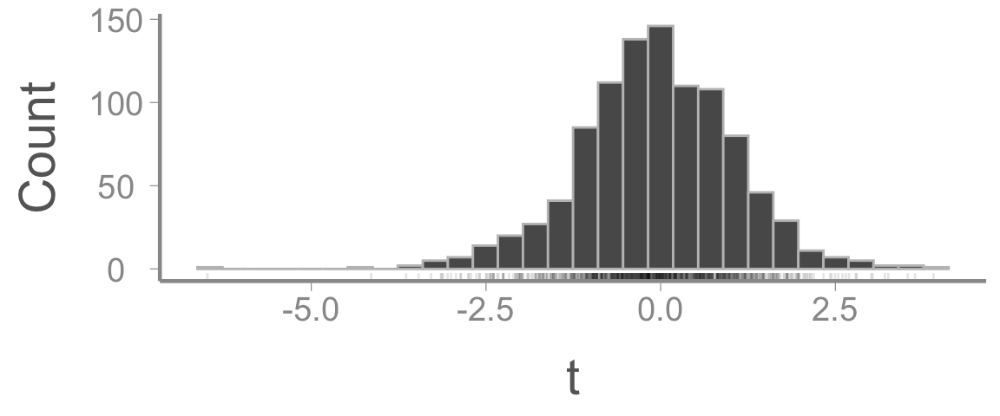
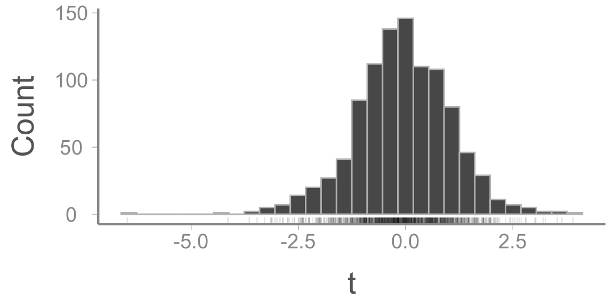
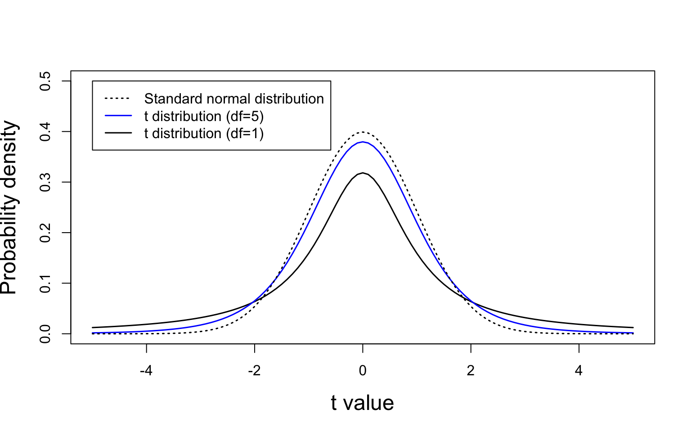
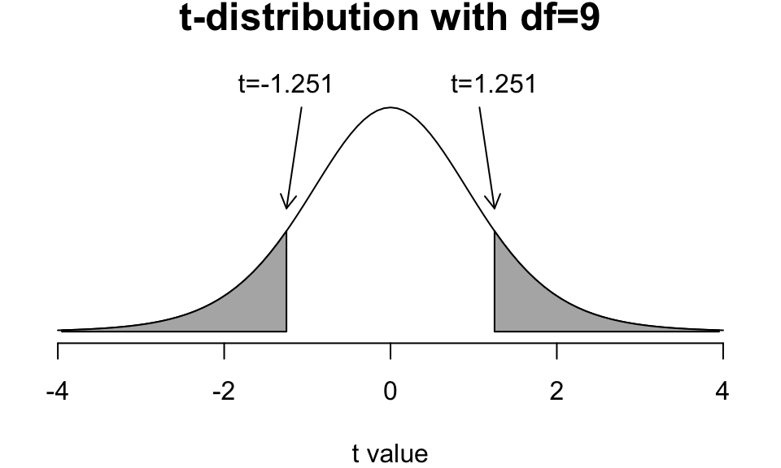
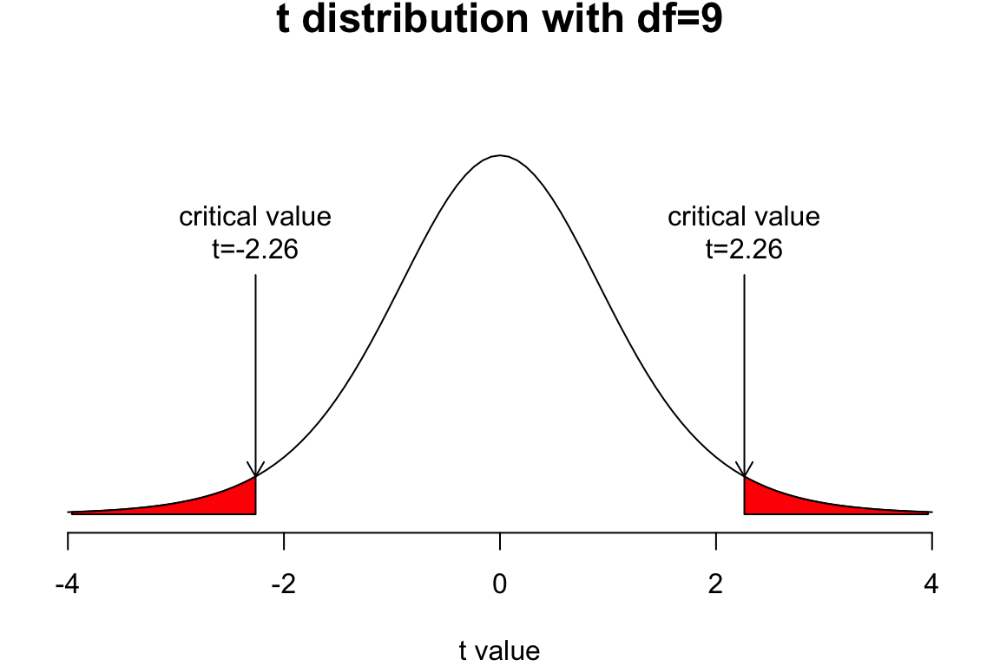

Note that this is same as the estimate of \(\beta_1\) provided by the lm and t-test functions
Null hypothesis testing
Our estimate of \(\beta_1\) is clearly not \(0\) but does that imply that the null hypothesis is wrong?
Not necessarily! Why?
Sampling error! Even if \(\beta_1 = 0\), \(\hat{\beta}_1\) will never equal 0
Enter null hypothesis testing:
formal approach to deciding whether a statistical relationship in a sample reflects a real relationship in the population or is just due to chance
Null hypothesis testing
NHT is based on the expectation of what our data should look like if the null hypothesis is true
If our data look really different than what we expect if the null hypothesis is true, then it is unlikely that the null hypothesis is true and we reject \(H_0\)
It’s important to note that there is always a chance that our results are simply due to chance
Type I error (i.e., false positive rate)
The probability that we will reject \(H_0\) when it is actually true
Usually denoted \(\alpha\)
Generally, \(\alpha = 0.05\) or \(\alpha = 0.01\) are accepted Type I error rates
Null hypothesis testing
How do we know what the data should look like if the null hypothesis is true?
Again, we can use theory to tell us about long-term expectations (similar to the sampling distribution)
But maybe easier to understand using simulation
Simulating data under \(\small H_0\)
Imagine the null hypothesis is true in the measurement error example (i.e., measurement error = 0)
Any difference between the sample mean and 0 is just due to sampling error
We can simulate a “sample” in R using the rnorm() function
y <-rnorm(n =10, mean =0, sd =1)mean(y) -0
[1] -0.2247
Note that the we fixed the mean of the normal distribution to be 0, so we know the null hypothesis is true
Simulating data under \(\small H_0\)
Instead of just taking the difference \(\bar{y} - 0\), we can standardize the differences by dividing by the standard error:
se.y <-sd(y)/sqrt(10)(mean(y) -0)/se.y
[1] -0.6964
This tells us how many standard errors away from 0 the sample mean is
We’ll call this value \(t\)
\[ t = \frac{\bar{y} - 0}{SE_y}\]
Simulating data under \(\small H_0\)
Generate and plot 1000 sample means:
t <-numeric(length =1000)for(i in1:1000){ y <-rnorm(10, mean =0, sd =1) t[i] <-mean(y)/(sd(y)/sqrt(10))}

Simulating data under \(\small H_0\)

Note that:
The null hypothesis was true for every sample
Some sample means were bigger than expected, some were smaller (all due to sampling error!)
The resulting distribution looks kind of normal
The t-distribution
The distribution of the t-statistics is not quite normally distributed
Instead, theory says that the t-statistics will follow a \(t\)-distribution with \(n - 1\) degrees of freedom (if the null hypothesis is true!)

The t-distribution
More about the t-distribution
Continuous probability distribution
Symmetrical with mean = 0
More mass in the tails as degrees of freedom get smaller (i.e., more extreme values become more likely)
For sample sizes \(n \gt 30\), the \(t\)-distribution is essentially a standard normal distribution with mean = 0 and SD = 1
Published by William Sealy Gosset in 1908 under the pseudonym “Student”. Gosset worked for Guinness and was interested in quality control of beer ingredients
Null hypothesis testing
Quick review:
The null hypothesis \(H_0\) is that there is no effect or no difference
The t-statistic measures the difference between the sample mean and its hypothesized value (under the null) relative to its standard error
If the null hypothesis is true, the t-statistics from repeated samples follow a t-distribution with \(n-1\) degrees of freedom
Importantly, because we can quantify properties of the t-distribution, we can compare the t-statistic calculated from our observed sample to the expected values under the null hypothesis
If our observed t-statistic would be unlikely under the null hypothesis, we can conclude that the null hypothesis is false
Approximately 18% of the simulated values of \(t\) are larger than 1.25 (or smaller than -1.25)
Put another way, if the null hypothesis is true, there is about a 1 in 5 chance of observing \(t \geq 1.25\)
Null hypothesis testing
In reality, we don’t need to simulate the distribution of \(t\) every time we do an experiment

Easy (in R) to calculate the area of grey shaded regions, which is the probability of getting a value \(t\) larger in magnitude than 1.251 if the null hypothesis true
This is called a p-value
In our example, \(p = 0.174\). Would you reject the null?
More on p-values
The p -value tells you how likely your observations (or more extreme) would be if the null hypothesis is true
A p -value does not tell us how much evidence there is in favor of a particular difference in means
What factors result in a small p -value?
The sample mean is far from 0
And/or the SE is small
Type i error and p-values
In NHT, our conclusion must be to either reject or “fail to reject” the null hypothesis
When we reject the null hypothesis, there is always a chance that we do so mistakenly
Due to sampling error, there is always a chance we get a large value of t even if the null hypothesis is true
These “false positive” mistakes are referred to as Type I error (denoted \(\alpha\))
The probability of type I error is measured by the p-value
Generally, we want to avoid false positive conclusions. Why?
Type I error rates of \(\lt 5\)% or \(\lt 1\)% are generally considered reasonable
Critical values
Before statistical software made it easy to calculate p-values, researchers would look up critical values
For a given sample size (degrees of freedom) and \(\alpha\), what is the associated value of t
If your calculated t is \(\geq\) the critical value, reject the null hypothesis

Frog example
Back to the frog example
data(frogdata)fit2 <-lm(Frogs ~ Development, data = frogdata)broom::tidy(fit2)
Notice that the lm output provides a t-statistic and p-value for both the slope coefficient and the intercept
How do we interpret the intercept p-value?
Is the p-value for the intercept biologically meaningful?
Nst for t-tests
As we saw before, the frog model can be fit as a two-sample t-test
t.test(Frogs ~ Development, data = frogdata)
Welch Two Sample t-test
data: Frogs by Development
t = 5, df = 18, p-value = 1e-04
alternative hypothesis: true difference in means between group Low and group High is not equal to 0
95 percent confidence interval:
7.554 18.646
sample estimates:
mean in group Low mean in group High
19.2 6.1
Notice that the t-statistic and p-value is the same as the lm model
Looking ahead
Next time: Evaluating assumptions of linear models